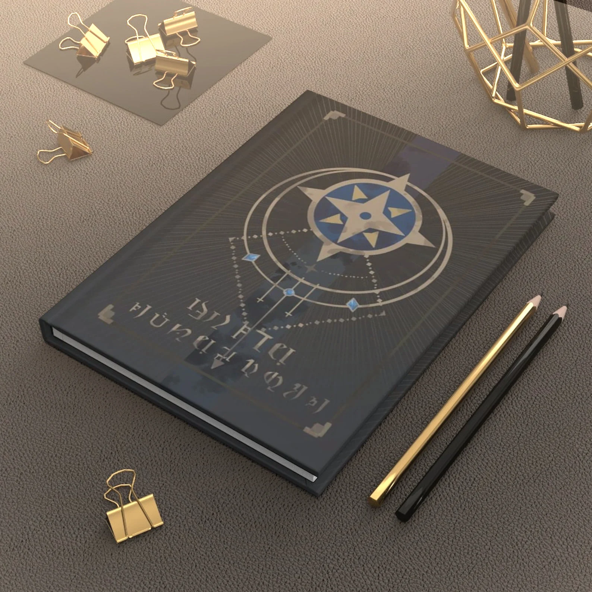

Veteran's tipConsejo de la veterana
Before you spend all your Primogems, we need to talk. Already spent them? Oh well, you screwed up. Okay, let me help. Antes de que gastes todas tus Protogemas, tenemos que hablar. ¿Ya te las gastaste? Ni modo, ya la cagaste. A ver, te ayudo.
I'm that friend who's been playing for years: I tell you what you're doing wrong, laugh a little, and then help you fix it. No jargon, no judging your favorite characters, and tools so you don't make the same mistakes we did. Soy esa amiga que lleva años jugando: te digo qué estás haciendo mal, me río tantito y luego te ayudo a arreglarlo. Sin tecnicismos, sin juzgar a tus personajes favoritos y con herramientas para que no cometas los mismos errores que nosotros.

Read them in any order. When you finish one, mark it as read and I'll keep count here. Léelas en el orden que quieras. Cuando termines una, márcala como leída y aquí te llevo la cuenta.
Little lessons we learned the hard way.Pequeñas lecciones que aprendimos a la mala.
“You don't have to be the best traveler in Teyvat. You just have to stop making the same mistakes we did.” «No tienes que ser el mejor viajero de Teyvat. Solo tienes que dejar de cometer los mismos errores que nosotros».
That's the spirit of the Manual del AR Chikito 💚 Ese es el espíritu del Manual del AR Chikito 💚